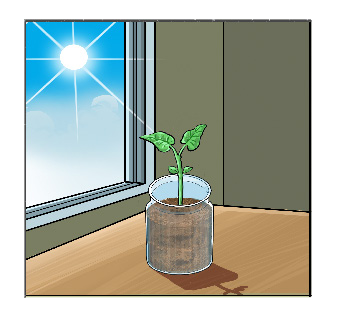
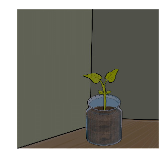

Jaribio namba 3: Kuchunguza umuhimu wa mwanga wa jua katika ukuaji wa mimea
Lengo:Kubaini umuhimu wa mwanga wa jua katika ukuaji wa mimea
Mahitaji:Miche miwili (2) ya aina moja na ukubwa sawa iliyopandwa kwenye vyombo viwili vilivyowekwa alama A na B, maji, mwanga wa jua, sanduku la giza ambalo halipitishi mwanga, rula na daftari.
Hatua
1. Weka mche uliopo kwenye chombo A mahali penye mwanga wa jua.
2. Weka mche uliopo kwenye chombo B ndani ya sanduku la giza ambalo haliruhusu mwanga kupita.
3. Mwagia miche yote miwili kiasi kile kile cha maji kila siku.


Kielelezo namba 4: Uchunguzi kuhusu umuhimu wa mwanga wa jua katika ukuaji wa mmea